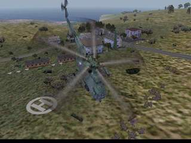

| Vylodění-Přístav | |||
| Autor : Batyskaf | |||
| Ostrov : Malden | |||
| Velikost : 84 kb | |||
| Hodnocení | |||
| RP | Veřejné | Hlasováno | Staženo |
| 6/10 | 6/10 | 6x | 66x |
| Zobrazit autorův popis mise | |||
| Stáhnout tuto misi | |||
| Zpět na SP mise | |||

V celku pěkná mise, ale pár věcí by tam za opravu rozhodně stálo!
Problém jsem měl s intrem a outrem, protože mi chyběl doplněk
csla_ammobedna, takže jsem si to musel spustit v editoru, kde to šlo
dobře. Podobně také při načítání mise mi chyběl doplněk bmp2, ale to
nebrání odehrání. Jsi velitelem družstva ČSLA a máš několik úkolů, které
vedou k získání přístavu obsazeného amlíky.  Na začátku v briefingu máte možnost si zvolit zbraň, tak to nepřehlédněte. Na začátku v briefingu máte možnost si zvolit zbraň, tak to nepřehlédněte.Didymos |